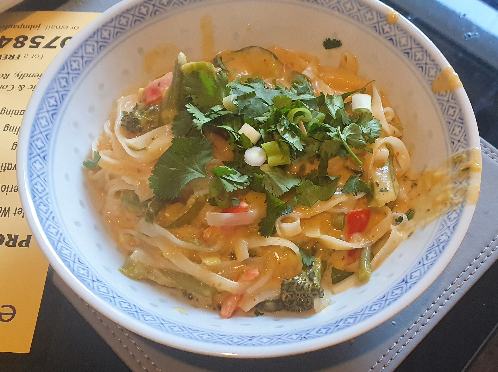

Recipes Home
Thai Red Vegetable Laksa

Description
This recipe was inspired by Hello Fresh's Fragrant Chicken Laksa recipe.
The chicken version is lovely, but since I didn't have chicken in the fridge at the time, I made a vegetable version with all the vegetables I had in the fridge. It was a huge success!
Feel free to substitute with chicken, or your preferred alternative vegetables or meat.
This recipe is not fully vegetarian as it contains chicken stock and fish sauce in the curry paste, but this can be substituted with vegetable stock and a vegetarian curry paste if required.
It should serve roughly 2 people.
Ingredients
- 1 Courgette
- 2 leeks
- 2 peppers
- 1 red chilli
- Tenderstem broccoli
- 2 spring onions
- 300g rice noodles
- Lemongrass
- 1 tbsp garlic
- 1 tbsp ginger
- Bunch of fresh coriander
- 1.5 tbsp red curry paste
- 1 can coconut milk
- 1 cube chicken stock
- 1 lime
- 2 tbsp peanut butter
- 450 ml water
- Pinch of sugar
- Pinch of msg
- Salt and pepper to taste
Instructions
- Chop vegetables, grind ginger, garlic and lemongrass into a paste
- Add oil to a pot and begin frying the leeks with half the spring onions
- After frying for a few minutes add the garlic, ginger, chilli and lemongrass, fry for 1 min
- Add the red curry paste and fry for another minute
- Add the remaining vegetables (excluding the coriander and remaining spring onion) and fry for another few minutes.
- Pour in the coconut milk and mix until smooth, add the chicken stock powder and boiling water and bring to a simmer
- Add the peanut butter, pinch of sugar and msg, simmer gently for 10 min, season with sugar, salt and pepper to your taste
- Add the noodles and cook until soft enough to eat (check recommendations on packet). If noodles soak up too much liquid, add some water
- Add the lime juice, more salt, pepper or sugar as needed and serve topped with fresh coriander.